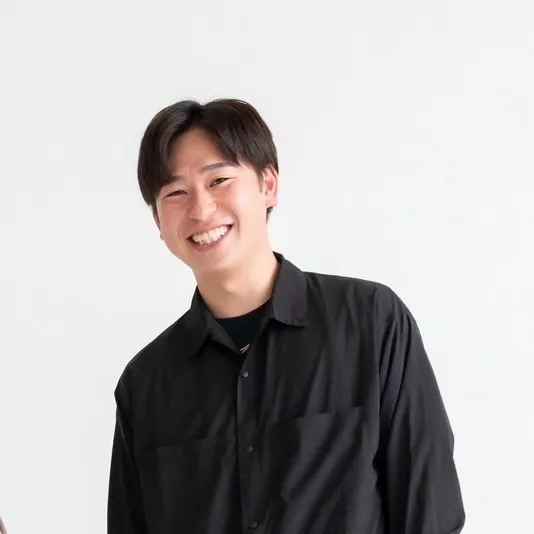

手取り15万の理学療法士が
年商2000万になれた本当の理由。
「このままでいいのか」と悩んでいた僕が、
現状を突破するために下した『ある決断』をすべてお話しします。
※マイスピー登録ページへ移動します
Seminar Date
2026.3.28 SAT
20:00 〜 21:30
Access
Zoomオンライン配信
※登録後、視聴URLをメールでお送りします
Entry Fee
参加無料
Deadline
3/27 24:00まで

「自分には何もない」と悩んだ病院勤務時代。
手取り15万から這い上がるために下した、ある『決断』。
理学療法士として病院に勤務し、将来への経済的な不安と「このままでいいのか」という葛藤に押しつぶされそうな毎日を送っていました。「3年後に独立する」と決めてからも、独りで戦う怖さと経営の分からなさに立ち止まりかけました。
現在は整体院 晴々 院長として、信頼できる仲間と共に年商2000万を実現。自身の経験を活かし、次世代の治療家が理想のキャリアを歩むための支援をしています。
人間の脳は「今のままが一番安全」と判断し、新しい変化を全力で止めようとします。あなたが弱いからではなく、脳の仕組みがそうなっているだけです。
「お金がない」「時間がない」「もっと準備してから」。脳は現状を維持するために、もっともらしい『やらない理由』を天才的な速さで作ります。
「なりたい未来があるなら、やる一択。」
迷う時間を、「どうやって実現するか」を考える時間に変える。
それがすべての始まりです。
経営も集客も手探り。試行錯誤に膨大な時間を溶かし、結果が出る前に情熱が枯渇する。これが最大の遠回りです。
同じ志を持つ仲間と仕組みを共有し、共に高みを目指す。今の環境は、かつての僕では想像もできないほど楽しく、刺激的です。
僕が独立して確信したこと。
それは、「誰と歩むか」という環境の選択が、人生のすべてを決めるということです。